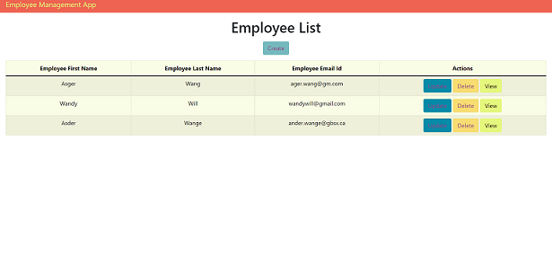
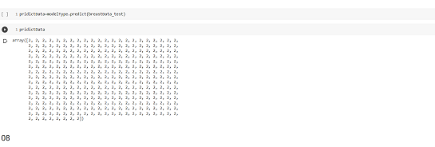
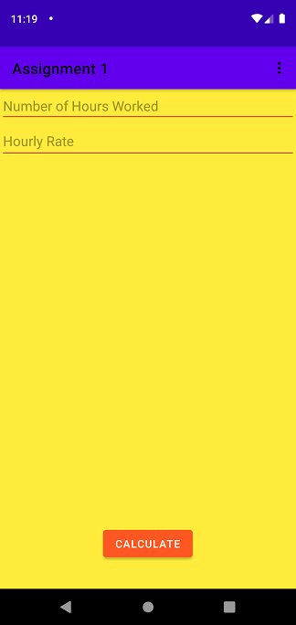
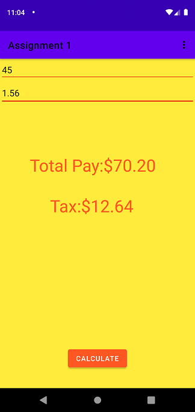
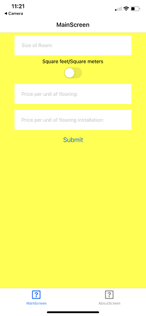
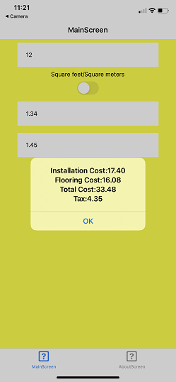
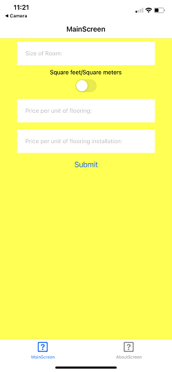
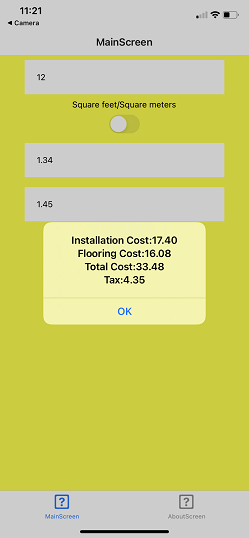

Academic Work Experience👨💻
Web Development Experience


Rest API Retreival
This system used Express to make routes and retrive info using JSON.
GitHub
Employment Management System Backend
This system used Express and MongoDB to connect the database together and perform CRUD.
GitHubEmploment Management System Front-end
This sample showcases my React skills and connects the backend above to create a full stack app with the MERN stack.
GitHubData Science Experience
Data Science Final Project.
This sample showcases my my Data Science skills using all of the data science libraries- Numpy,Pandas,Seaborn,Matplotlib and Scikit-Learn.
GitHubMobile Experience
 Android Paycheck App
This app calculates the paycheck and taxes based on number of hours and hourly rate.
GitHub


Crost Platform Cost App
This app calculates installation cost,flooring cost,total cost and taxes.
GitHub
Capstone Project
Project Summary
 
Crost Platform Cost App
This app calculates installation cost,flooring cost,total cost and taxes.
GitHub
Capstone Project
Project Summary
Capstone Project
Project Summary
About the company:
Mötley Zoo is a privately owned company which
specializes in several
services centered around dogs and cats primarily based in the east end of Toronto. Services
include group dog walking, private dog walking, pet taxi services, and cat visits.
About the project: Currently the company relies on a third-party service provided by “Time
To Pet” which bears a cost of $100US per month for three staff members, plus additional
charges of 3% of the cost of each payment through their payment gate and additional $10US
charge per newly added staff member.
Our project offers to bring an alternative to this system which maintains all of the core
features, such as scheduling, messaging, reports, invoicing and a payment gate, and further
expands the user base ability to any number of staffers. All at a reduced cost of covering
just
the hosting costs for the system, and the payment gate fees through Stripe
(https://stripe.com), which is 2.9% of each payment. All of this would be done behind a
secured and company-owned login/membership system.
Project Vision
Capstone Team 09 will strive to develop a fully functioning system to replace the high cost “Time To Pet” system that Mötley Zoo is currently relying on, at a fraction of their current costs, with expanded features including a more customized set of business requirements for Mötley Zoo’s business model. The system will implement several features including a scheduler with varying functionality depending on user type, communications and reporting, report exports to pdf, automated emailing, and a payment gate, with additional features planned for later expansion which TTP does not cover.
To learn more, see links below: